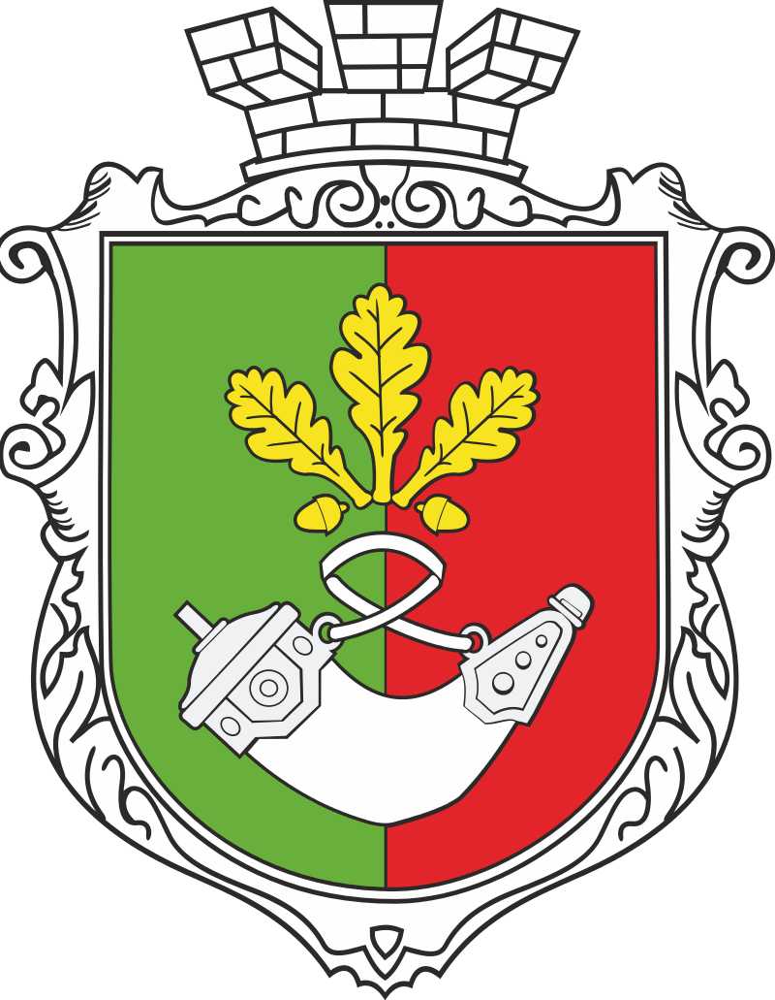
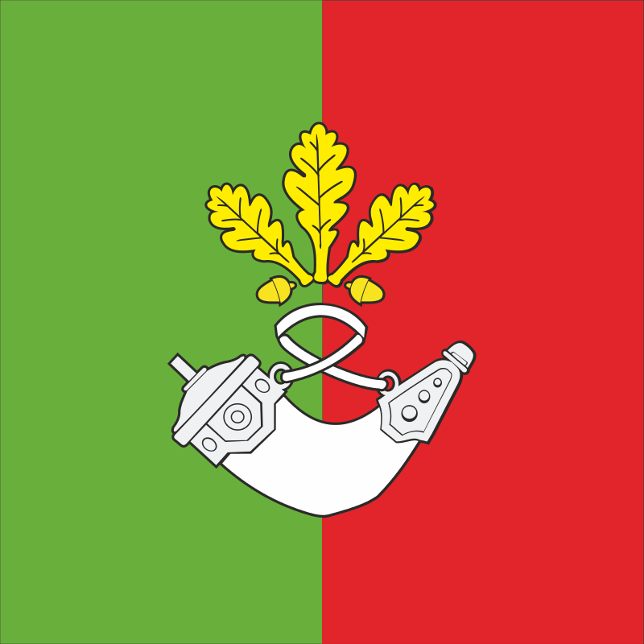

місто в Україні, у Дніпропетровській області. Найбільше з міст України, які не є обласним центром. Населення станом на 1 січня 2020 року становить 619,3 тис. мешканців. Друге за площею місто України (після Києва). Відстань до обласного центру становить 146 км. Згідно з даними офіційного сайту міської ради, довжина міста станом на 2019 рік — 126 км, разом з цим лінійна відстань між крайніми південною та північною точками на межі міста є майже удвічі меншою і становить 66,1 км, окремі дослідники також наводять у своїх працях цифру у 60 км, відповідно питання реальної довжини Кривого Рогу є доволі спірним. Розташований на березі річок Інгулець і Саксагань, Кривий Ріг був заснований у 1775 році козаками. Військове поселення на 1860 рік було у складі Херсонської губернії. Регіон почав зростати на рубежі 1880-х років. Урбанізація Кривого Рогу не була запланованою; французькі та англійські інвестиції були залучені бумом у металургії та гірничодобувній промисловості, відкриттям багатих родовищ залізної руди. Будівництво Катерининської залізниці для транспортування руди на Донбас перетворило Кривий Ріг у велике місто, цей статус він отримав у 1919 році. У 1934 році введено в експлуатацію першу чергу (доменна піч «Комсомолка») Криворізький металургійний завод (нині АрселорМіттал Кривий Ріг), найпотужніше з понад 500 підприємств регіону. У наш час місто є великим індустріальним та культурним центром України.
Герб Кривого Рогу: Прапор Кривого Рогу:
 Відеоролик: "Кривий Ріг з висоти пташиного польоту"